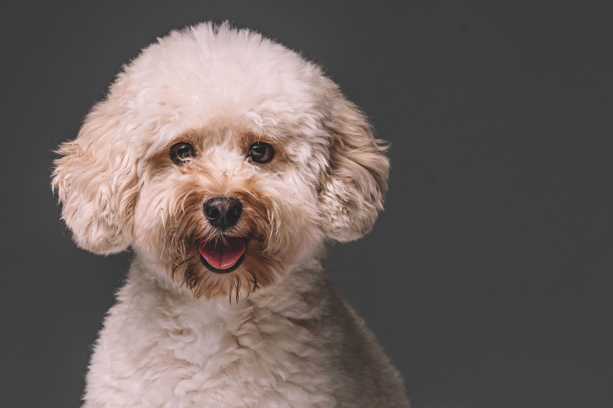
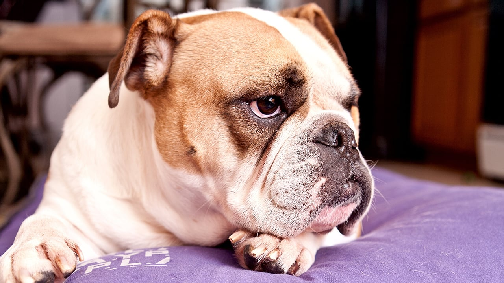
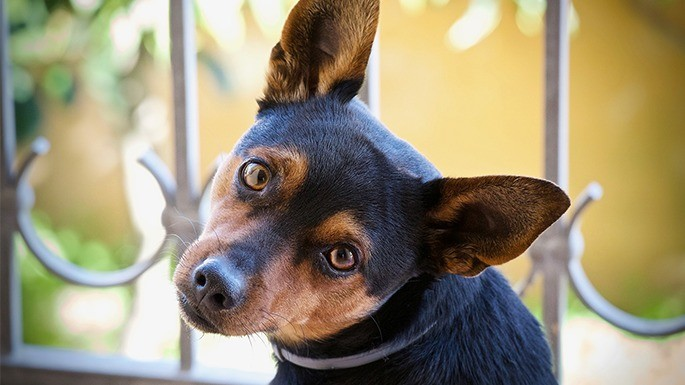
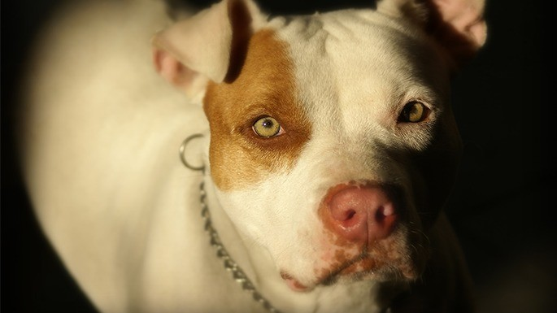
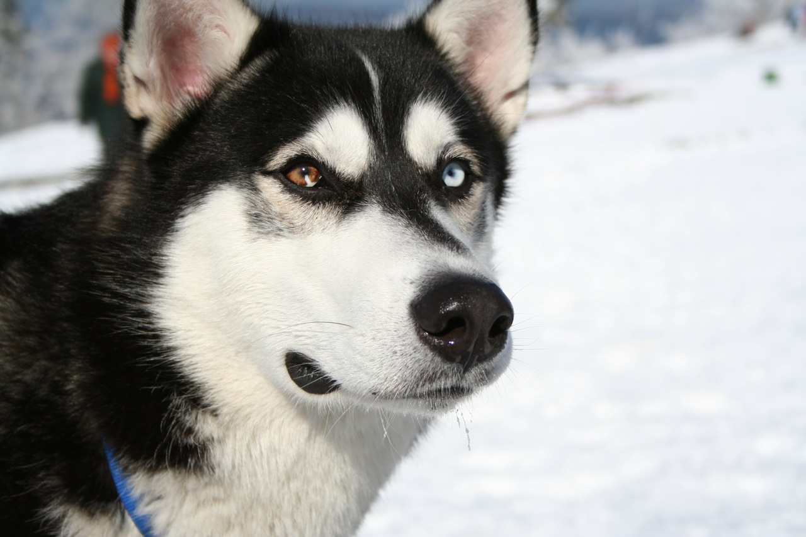

Informações sobre Cachorros
Aqui você encontrará informações sobre raças populares de cachorros e cuidados necessários.
Raças populares de cachorros
-
Poodle
O Poodle é uma raça de cachorro inteligente e leal, conhecida por sua pelagem fofa e fácil de cuidar.
-
Buldogue
O Buldogue é uma raça de cachorro forte e corajosa, conhecida por sua aparência única e personalidade dócil.
-
Golden Retriever

O Golden Retriever é uma raça de cachorro amigável e leal, conhecida por sua pelagem dourada e habilidade de caça.
-
Pinscher
O Pinscher é uma raça pequena, enérgica e destemida, conhecida por sua vigilância e personalidade corajosa.
-
Pastor Alemão

O pastor alemão é uma raça grande, inteligente e leal, amplamente utilizada como cão de trabalho e guarda.
-
Pitbull
O pitbull é uma raça forte, musculosa e enérgica, conhecida por sua lealdade, coragem e alto nível de resistência.
-
Husky
O Husky é uma raça de porte médio, conhecida por sua resistência, pelagem densa e olhos marcantes, além de ser amigável e enérgico.
Cuidados necessários para os cachorros
- Alimentação balanceada: fornecer ração de qualidade adequada à idade e porte do cão.
- Exercícios regulares: garantir atividades físicas diárias para manter a saúde e gastar energia.
- Vacinação e vermifugação: seguir um calendário de vacinas e vermifugação para prevenir doenças.
- Higiene e banhos: mantenha o seu cachorro limpo e bem cuidado, com banhos regulares e escovação de pelagem.
- Atenção e afeto: proporcionar carinho, interação e estimulação mental para o bem-estar emocional.